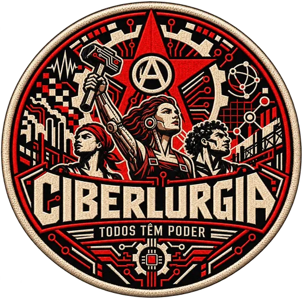
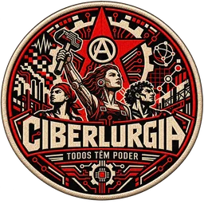
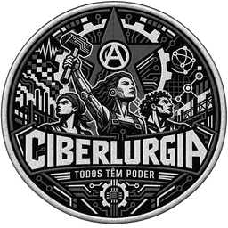

Ciberlurgia
A ferramenta é de quem usa.
Por isso trabalhamos com software livre e licenças abertas.
Coletivo de cultura digital

Dois selos bordados. O grande guarda a memória operária e o "Todos têm poder". O pequeno, com o CCCD, vai aonde o grande não cabe: ícone, avatar, carimbo, adesivo. Os dois pousam sobre a gota e não se mexem.

A gota é metal derretido que não para quieto: estica, solta um pingo, junta de novo. O selo descansa por cima, sem sombra, colado ao metal. As sinapses acendem e apagam só na gota.
A gota com a miniatura fica à esquerda, centrada na altura do nome. As duas linhas começam no mesmo ponto e terminam no mesmo ponto. A área de proteção (x) é metade do diâmetro da miniatura.

O selo grande vai até 96 px na tela, ou 25 mm no papel. Abaixo disso entra a miniatura, que segura bem até 32 px.
Para xerox, carimbo, jornal e impressão de uma cor, a gota perde o fogo e vira tinta, parada. Na tela, a versão em preto e branco também pode se mexer, com sinapses em branco ou em grafite.


Assinatura em uma cor.
Gente de verdade do território: a mão na bancada, a ferramenta em uso, a oficina acontecendo. A foto vira fotomontagem, em preto e branco de contraste alto, recortada à mão, cruzada pelo laser e costurada pelo bordado.

Preto e branco com contraste e compressão para web num comando do ImageMagick. Uma foto de 1200 px costuma ficar entre 60 e 90 KB.
magick foto.jpg -colorspace Gray \ -sigmoidal-contrast 6x50% \ -resize 1200x -quality 70 foto.webp
Duas peças montadas só com o kit. O evento do cartaz é inventado, para mostrar a estrutura. A frase do post é do manifesto.
Por isso trabalhamos com software livre e licenças abertas.